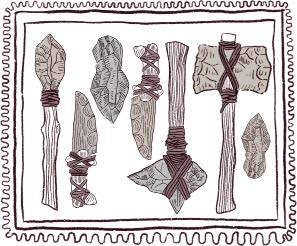
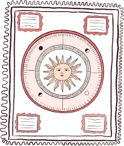
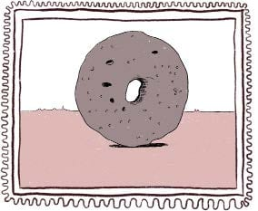

BREVE EVOLUCIÓN DE LAS TECNOLOGÍAS
Las formas de vivir de las personas se transforman todo el tiempo:
Imaginan
Inventan
Crean
Desarrollan
TECNOLOGÍAS
PREHISTORIA
2,5 millones de años hasta 5000 a.C.
• Herramientas de piedra
• Invención de la rueda
• Uso del fuego
• Vestimenta
• Agricultura
Aparición de las tecnologías
ANTIGÜEDAD
5000 a.C. hasta el siglo V
• Escritura
• Construcción de obras
• Matemáticas
• Calendarios solares y lunares